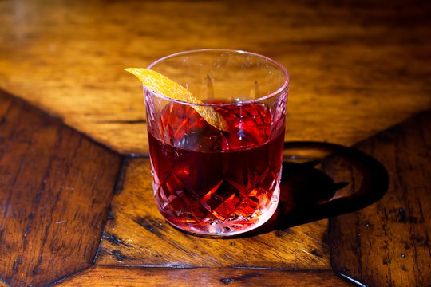

Death and Co Negroni Recipe (Link)

Death and co's World Famous Negroni:
For years Death and Co has been a world renowned bar. This recipe brings
their negroni cocktail to your home bar with minimal effort!
Ingredients:
- 2.25 ounces London Beefeater Gin.
- 2.25 ounces Dolin Rouge Vermouth.
- 2.25 ounces Campari bitters.
- Orange Angustura bitters.
- Lemon.
- Ice.
Preparation:
- Measure one part each of gin, vermouth, and Campari bitters and pour into mixer.
- Add a dash of Angustura bitters and ice.
- Use long handle stirrer and stir ingredients until well diluted.
- Strain into a high-ball glass with one or two large block ice pieces.
- Express lemon over drink and add as garnish.
- enjoy!
Back to Homepage